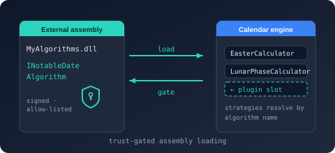

Bodu.Globalization.Calendar.Plugins

Bodu.Globalization.Calendar.Plugins loads external assemblies that contribute custom INotableDateAlgorithm implementations — astronomical calculators, ecclesiastical computus variants, gazetted-table lookups — into the calendar runtime, behind an explicit, deny-by-default trust gate. It is a companion to the runtime in the Globalization & Calendars topic.
Use it only when algorithms must be discovered from assemblies you do not compile into the host. An application that consumes the built-in algorithms or the curated data packs never needs it, and an in-process custom algorithm needs only the runtime's NotableDateAlgorithmRegistry.Register(key, algorithm).
The loading pipeline
- Trust. The host supplies an IPluginTrustPolicy. The loader builds a PluginTrustContext — assembly name, path, SHA-256 file hash, and strong-name public-key token — and the policy answers with a PluginTrustResult (
Trusted()orRejected(reason)). Trust is evaluated before the plugin's entry-point type is activated, so an untrusted assembly's constructors never run. - Discovery. The assembly must declare its entry point once at assembly level with NotableDatePluginAttribute (
[assembly: NotableDatePlugin(typeof(ContosoPlugin))]). The type implements INotableDatePlugin (Name,Version) and, to contribute algorithms, INotableDateAlgorithmPlugin (GetAlgorithms()returning key / algorithm pairs). - Activation. The loader instantiates the entry-point type. Failures are typed: PluginNotTrustedException (with
AssemblyNameand the policy'sReason), PluginMissingAttributeException, or PluginActivationException (withPluginType) — all deriving from NotableDatePluginException. - Registration.
RegisterAlgorithmscopies the plugin's contributed keys into a NotableDateAlgorithmRegistry. Registration is atomic — the contribution is fully staged and validated before the registry is touched — and a key that collides with a built-in or already-registered algorithm is rejected unless the host opts in. - Wiring. The registry is passed to both NotableDateResourceLoader (so documents may reference the plugin's keys during validation) and NotableDateService (so
<Algorithm key="…">rules resolve at query time).
The loader
NotableDatePluginLoader is static and exposes three load overloads plus registration:
| Member | Returns | Use when |
|---|---|---|
LoadFrom(string assemblyPath, IPluginTrustPolicy trustPolicy, ILogger? logger = null) |
INotableDatePlugin | The normal case. Loads the file into a dedicated AssemblyLoadContext, hashing the image it maps, and evaluates trust before activation. |
LoadFromFile(string assemblyPath, IPluginTrustPolicy trustPolicy, ILogger? logger = null) |
NotableDatePluginHandle | The same load, but the returned handle owns the collectible load context: Dispose() initiates an unload (IsUnloadable reports whether one is pending). Unloading completes only once nothing references the plugin's types — a registry still holding its algorithms keeps the context alive. |
LoadFrom(Assembly assembly, IPluginTrustPolicy trustPolicy, ILogger? logger = null) |
INotableDatePlugin |
An assembly you have already loaded. Weaker guarantee — module initializers have already run before the trust check, and the hash is re-read from Assembly.Location rather than the loaded bytes — so never use it for untrusted input. |
RegisterAlgorithms(INotableDatePlugin plugin, NotableDateAlgorithmRegistry registry, ILogger? logger = null) |
int — the number of algorithms registered |
Default registration: colliding keys are rejected. A plugin that is not an INotableDateAlgorithmPlugin contributes nothing and returns 0. |
RegisterAlgorithms(INotableDatePlugin plugin, NotableDateAlgorithmRegistry registry, PluginAlgorithmRegistrationOptions options, ILogger? logger = null) |
int |
Registration under explicit PluginAlgorithmRegistrationOptions: AllowOverride = true permits a contributed key to replace a built-in or existing registration, logging each override at warning level. PluginAlgorithmRegistrationOptions.Default is the reject-collisions instance. |
Every overload accepts an optional ILogger (defaulting to NullLogger.Instance) that records trust rejections (warning), passed trust checks (debug), activations (information), and the count of algorithms each plugin contributed (information).
Trust policies
| Policy | Admits when | Notes |
|---|---|---|
StrongNamePluginTrustPolicy(IEnumerable<string> allowedPublicKeyTokens) |
The assembly's strong-name public-key token (lowercase hex, compared case-insensitively) is in the allowlist. | Verifies the token declared in the manifest, not the signature itself; an assembly with no strong name is always rejected. |
FileHashPluginTrustPolicy(IReadOnlyDictionary<string, byte[]> allowedHashesByAssemblyName) |
The SHA-256 digest of the bytes on disk equals the digest pinned under the assembly's name. | Byte-level tamper resistance without a strong name; pin a fresh digest on every plugin update. |
CompositePluginTrustPolicy(params IPluginTrustPolicy[] policies) |
Every composed policy admits; the first rejection short-circuits and its reason is surfaced. | Fails closed — an empty composite rejects everything. Compose strong-name + hash for both provenance and integrity. |
DelegatingPluginTrustPolicy(Func<PluginTrustContext, PluginTrustResult> decide) |
Your delegate says so. | Adapt an existing allowlist, signing service, or configuration store. |
| AllowAllPluginTrustPolicy | Always. | Development and testing only. |
The plugin trust guide states the security boundary plainly — what the gate does and does not evaluate, why user-writable locations should be rejected, and how registration is gated a second time.
Install
dotnet add package Bodu.Globalization.Calendar.Plugins
Targets net8.0. Depends on Bodu.Globalization.Calendar (and, through it, Bodu.Core) and Microsoft.Extensions.Logging.Abstractions. Status: Stable (see the package matrix).
Minimal sample
Load a strong-named plugin, register its algorithms, and wire the registry into both the loader and the service so a document can reference the plugin's key:
using Bodu.Globalization.Calendar;
using Bodu.Globalization.Calendar.Algorithms;
using Bodu.Globalization.Calendar.Plugins;
// Provenance (strong-name token) and integrity (pinned SHA-256) — both must pass.
IPluginTrustPolicy trust = new CompositePluginTrustPolicy(
new StrongNamePluginTrustPolicy(["c0ffee1234567890"]),
new FileHashPluginTrustPolicy(new Dictionary<string, byte[]>
{
["Contoso.Calendar.Plugin"] = Convert.FromHexString("9f86d081884c7d659a2feaa0c55ad015a3bf4f1b2b0b822cd15d6c15b0f00a08"),
}));
INotableDatePlugin plugin = NotableDatePluginLoader.LoadFrom("plugins/Contoso.Calendar.Plugin.dll", trust);
var registry = new NotableDateAlgorithmRegistry();
int registered = NotableDatePluginLoader.RegisterAlgorithms(plugin, registry); // colliding keys are rejected
Console.WriteLine($"{plugin.Name} {plugin.Version}: {registered} algorithm(s)");
const string xml = """
<NotableDateResource xmlns="urn:bodu:globalization:calendar" schemaVersion="1.0" resourceId="contoso">
<NotableDates>
<NotableDate id="harvest-moon-festival" displayName="Harvest Moon Festival" category="Cultural">
<Rules>
<Rule id="default"><Strategy><Algorithm key="contoso-harvest-moon" /></Strategy></Rule>
</Rules>
</NotableDate>
</NotableDates>
</NotableDateResource>
""";
// The registry goes to the loader (validation knows the key) and to the service (resolution finds the algorithm).
NotableDateResource resource = NotableDateResourceLoader.Load(xml, _ => null, registry);
var service = new NotableDateService(resource, new NotableDateServiceOptions { Algorithms = registry });
To unload later, take a handle instead — using NotableDatePluginHandle handle = NotableDatePluginLoader.LoadFromFile(path, trust); — and discard the registry and service before disposing it. Authoring the plugin side (the assembly attribute, the INotableDateAlgorithmPlugin implementation, and an INotableDateAlgorithm returning DateOnly? Calculate(int year)) is shown in Building and extending the service.
Where to go next
- Calendar plugin trust — the security boundary, what the gate evaluates, the bundled policies, the second gate at registration, and unloading.
- Building and extending the service — authoring a plugin, loading and registering it, trust policies, and the plugin exception hierarchy alongside the runtime's other extension seams.
- Date-calculation algorithms — the built-in
<Algorithm key="…">catalogue a plugin extends. - Bodu.Globalization.Calendar.Plugins API reference — full type-by-type docs.
- Bodu.Globalization.Calendar introduction — the runtime the plugins extend.